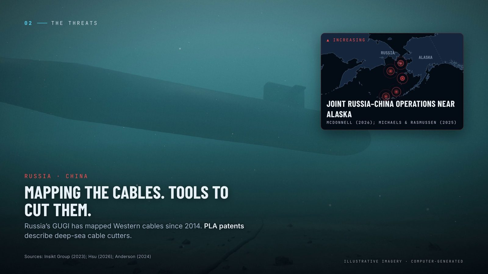

"In Alaska, the network doesn't live in a data center. It lives on mountaintops, beneath the sea ice, and along thousands of miles of ocean floor."
That's the opening line of a short video I made about my Ph.D. research at the University of Alaska Fairbanks. In under three minutes, it walks through what threatens Alaska's telecommunications networks, why distance changes everything up here, and what my research is finding so far.
Why a video?
Most of my research lives in places few people will ever read: a long literature review, a prospectus, and a lot of survey tables. I want it to reach the people it's actually about, the folks who keep Alaska connected and the communities that depend on them.
I made this video for my Ph.D. comprehensive examination, and I plan to use it in talks and classes too. A good visual can start a conversation that a long document never will.
What it covers
- The network. Alaska reaches the rest of the country, and the world, through four subsea cables and one land route through Canada. The cables all come ashore along one stretch of Southcentral coast.
- The threats. Sea ice, dragged anchors, nation-state interest in subsea cables, and state-sponsored intruders already found inside U.S. telecom networks.
- The distance. When a router fails in Seattle, service is back in hours. In Noorvik, the spare part flies from Seattle to Anchorage to Kotzebue, waits out the blizzard, then covers the last 45 miles by bush plane or snow machine. Hours become days.
- The impact. When sea ice cut an Arctic subsea cable in 2023, ATMs stopped working and 911 failed in some places. Backup links restored basic service, but the repair waited more than three months for the ice to retreat.
- The research. What threatens these networks, what stands in the way of protecting them, and how the people responsible perceive and prioritize the risks.

After synthesizing more than 350 sources, one pattern stood out: these threats don't arrive one at a time. They converge. So I'm measuring how the people responsible for these networks perceive risk, first with a best-worst scaling survey and then with interviews to explain the numbers.
The early results are interesting. 87% of respondents call their top threats complex or deeply uncertain, but operators and the sectors that depend on them prioritize very differently. And both groups raised a threat the surveys never asked about: AI. (These results are preliminary, from a small and specialized group.)
How I made it
I built the video with Claude, Anthropic's AI model, working in Claude Code. I gave Claude my literature review, my Research Golden Thread (the document that ties my dissertation together), and the history of real incidents. Claude drafted a script, and I edited it heavily. Claude produced the visuals, I set the requirements for accuracy, style, and image choices, and Claude produced the finished video.
A few rules I held to along the way:
- Every claim on screen shows its source.
- Computer-generated imagery is labeled as illustrative, and real photos are credited.
- The narration is a synthetic voice, and the video says so.
- The research, data, and analysis are mine. AI helped me tell the story. It didn't do the research.
Bringing research to the real world
Generative AI lets one researcher create the kind of explainer that used to take a production team. In a field like mine, where the people who need the research range from network engineers to community leaders and policymakers, that matters. It means the work doesn't have to stay on a shelf.
The video ends with the idea at the heart of my dissertation: convergence is the condition, and perception is the unmeasured variable. My research argues that perception decides what gets secured.
I hope you'll give it three minutes!
Watch the video
Watch it on YouTube, and share it with anyone who thinks about how Alaska stays connected.
If you work on the security or resilience of Alaska's telecommunications infrastructure, I'd love to hear how these risks look from your seat. Reach out at mrkitter@alaska.edu or connect on LinkedIn.